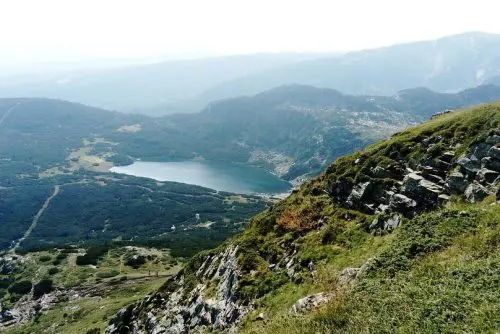
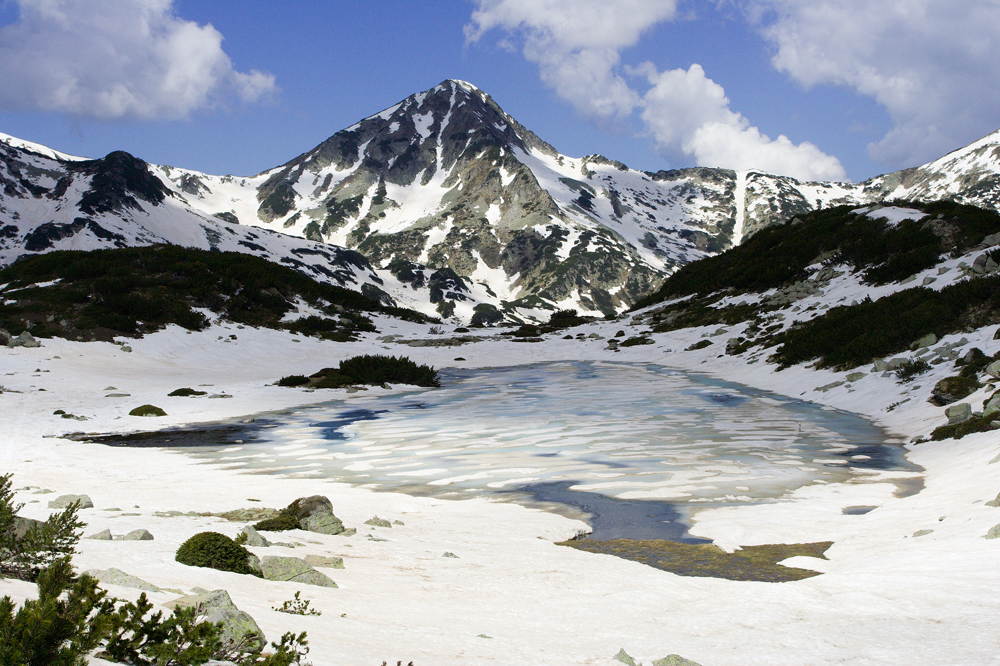

Без съмнение Рила планина е една от най-живописните български планини, предлагащи спиращи дъха планински гледки по всяко време на годината. Природата е дарила Рила с божествена красота и невероятно разнообразие от растителен и животински свят. В Рила се намират голям брой реки, извори, потоци и кристално чисти езера.
Пирин планина е с много живописна природа, но особено пленителни са районите с езера. Езерата в планината са с ледников произход. Водите са бистри, студени и дълбоки. Сред тези „огледала“ високо в Пирин планина, най-голямо е Поповото езеро. Голямото Попово езеро в Пирин планина е сред най- посещаваните природни забележителности в планината.
